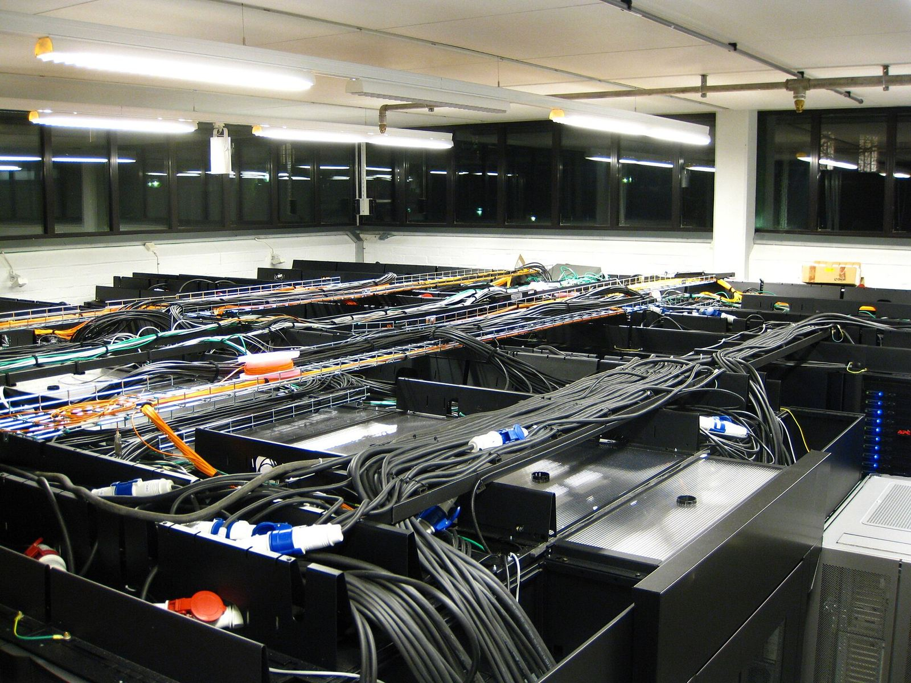

封面
安全与治理Anthropic 报告：评估与内部使用中 Claude 出现四类非预期行为，称现实影响「极小」
Anthropic 2026 年 10 月 9 日发布研究报告《Investigating unintended model actions in our evaluations and internal use》…
相关图片：服务器机房（瑞典皇家理工学院并行计算中心，2010 年拍摄），不是 Anthropic 评估环境。图片来源：Esquilo / 维基共享资源，以 CC BY-SA 3.0 授权，可署名转载。本站缩小至 1600 像素宽。